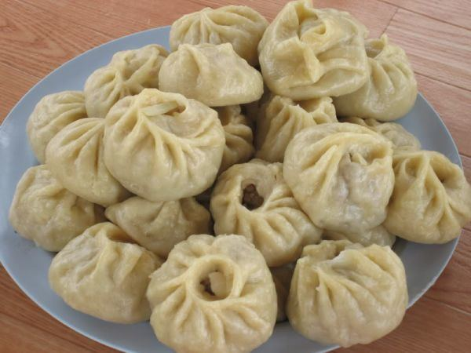

Home
Buuz

Ingredients
- meat(could be beef, sheep, goat)
- onion
- flour
Steps
- make flattened liitle circle doughs with water
- put minced meat and onion together and some salt and pepper(if you want sth special u can put whatever u want just search it up)
- put meat in dough and close it beautifully
- steam it for 20 minutes
- fan little when openning the lid after steaming
- enjoy